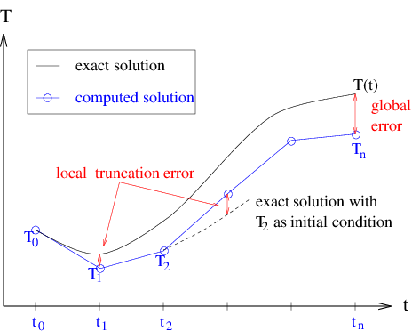
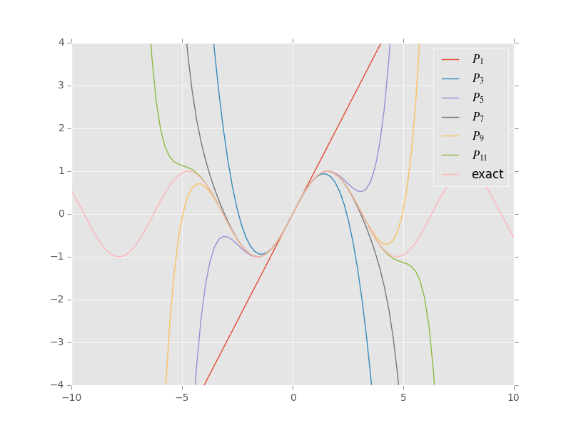
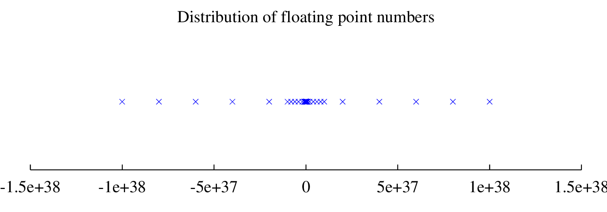

Important - before you start
Before starting on a new lab, you should “fetch” any changes that we have made to the labs in our repository (we are continually trying to improve them). Follow the instructions here: https://rhwhite.github.io/numeric_2024/getting_started/python.html#Pulling-changes-from-the-github-repository
Caution - if you have made changes to, for example, lab 1, but you didn’t duplicate and rename the file first, this can write over your changes! Follow the instructions above carefully to not lose your work, and remember to always create a copy of each lab for you to do your work in.
This step will be smoother if you haven’t saved any changes to the default files (sometimes even opening it, and saving it, counts as a change!)
Some notes about navigating in Jupyter Lab
In Jupyter Lab, once you have opened a lab, if you click on the symbol that looks like three bullet points over on the far left, this brings up a contents page that allows you to jump immediately to any particular section in the lab you are currently looking at.
The jigsaw puzzle icon below this allows you to install extensions, if you want extra functionality in your notebooks (you may need to go to Settings, Enable Extension Manager to access this).
Also, in Jupyter Lab you can click on links in the ‘List of Problems’ to take you to directly to each problem. Remember to check canvas for which problems you need to submit for the weekly assignments.
There are probems throughout this lab, as you might find at the end of a textbook chapter. Some of these problems will be set as an assignment for you to hand in to be graded - see the Lab 2: Assignment on the canvas site for which problems you should hand in. However, if you have time, you are encouraged to work through all of these problems to help you better understand the material.
In Lab #1 you were introduced to the concept of discretization, and saw that there were many different ways to approximate a given problem. This Lab will delve further into the concepts of accuracy and stability of numerical schemes, in order that we can compare the many possible discretizations.
At the end of this Lab, you will have seen where the error in a numerical scheme comes from, and how to quantify the error in terms of order. The stability of several examples will be demonstrated, so that you can recognize when a scheme is unstable, and how one might go about modifying the scheme to eliminate the instability.
Specifically you will be able to:
Define the term and identify: Implicit numerical scheme and Explicit numerical scheme.
Define the term, identify, or write down for a given equation: Backward Euler method and Forward Euler method.
Explain the difference in terminology between: Forward difference discretization and Forward Euler method.
Define: truncation error, local truncation error, global truncation error, and stiff equation.
Explain: a predictor-corrector method.
Identify from a plot: an unstable numerical solution.
Be able to: find the order of a scheme, use the test equation to find the stability of a scheme, find the local truncation error from a graph of the exact solution and the numerical solution.
Evaluate and compare the accuracy and stability of at least 3 different discretization methods.
This lab is designed to be self-contained. If you would like additional background on any of the following topics, I’d recommend this book: Finite difference computing with PDES by Hans Petter Langtangen and Svein Linge The entire book is available on github with the python code here. Much of the content of this lab is summarized in Appendix B – truncation analysis
Differential Equations:
Strang (1986), Chapter 6 (ODE’s).
Numerical Methods:
Strang (1986), Section 6.5 (a great overview of difference methods for initial value problems)
Burden and Faires (1981), Chapter 5 (a more in-depth analysis of the numerical methods and their accuracy and stability).
Newman (2013) Derivatives, round-off and truncation errors, Section 5.10 pp. 188-198. Forward Euler, mid-point and leap-frog methods, Chapter 8 pp. 327-335.
Remember from Lab #1 that you were introduced to three approximations to the first derivative of a function, \(T^\prime(t)\). If the independent variable, \(t\), is discretized at a sequence of N points, \(t_i=t_0+i \Delta t\), where \(i = 0,1,\ldots, N\) and \(\Delta t= 1/N\), then we can write the three approximations as follows:
Forward difference formula:
Backward difference formula:
Centered difference formula (add together the forwards and backwards formula):
In fact, there are many other possible methods to approximate the derivative (some of which we will see later in this Lab). With this large choice we have in the choice of approximation scheme, it is not at all clear at this point which, if any, of the schemes is the “best”. It is the purpose of this Lab to present you with some basic tools that will help you to decide on an appropriate discretization for a given problem. There is no generic “best” method, and the choice of discretization will always depend on the problem that is being dealt with.
In an example from Lab #1, the forward difference formula was used to compute solutions to the saturation development equation, and you saw two important results:
reducing the grid spacing, \(\Delta t\), seemed to improve the accuracy of the approximate solution; and
if \(\Delta t\) was taken too large (that is, the grid was not fine enough), then the approximate solution exhibited non-physical oscillations, or a numerical instability.
There are several questions that arise from this example:
Is it always true that reducing \(\Delta t\) will improve the discrete solution?
Is it possible to improve the accuracy by using another approximation scheme (such as one based on the backward or centered difference formulas)?
Are these numerical instabilities something that always appear when the grid spacing is too large?
By using another difference formula for the first derivative, is it possible to improve the stability of the approximate solution, or to eliminate the stability altogether?
The first two questions, related to accuracy, will be dealt with in the next section, Section 5 (1.5), and the last two will have to wait until Section 6 (1.6) when stability is discussed.
Before moving on to the details of how to measure the error in a scheme, let’s take a closer look at another example which we’ve seen already …
Let’s go back to the heat conduction equation from Lab #1, where the temperature, \(T(t)\), of a rock immersed in water or air, evolves in time according to the first order ODE:
with initial condition \(T(0)\). We saw in the section on the forward Euler method that one way to discretize this equation was using the forward difference formula for the derivative, leading to
\(T_{i+1} = T_i + \Delta t \, \lambda(T_i,t_i) \, (T_i-T_a).\) (eq: euler)
Similarly, we could apply either of the other two difference formulae to obtain other difference schemes, namely what we called the backward Euler method
\(T_{i+1} = T_i + \Delta t \, \lambda(T_{i+1},t_{i+1}) \, (T_{i+1}-T_a),\) (eq: beuler)
and the mid-point or leap-frog centered method
\(T_{i+1} = T_{i-1} + 2 \Delta t \, \lambda(T_{i},t_{i}) \, (T_{i}-T_a).\) (eq: midpoint)
The forward Euler and mid-point schemes are called explicit methods, since they allow the temperature at any new time to be computed in terms of the solution values at previous time steps only, i.e. it does not require any information from current or future time steps. The backward Euler scheme, on the other hand, is called an implicit scheme, since it gives an equation defining \(T_{i+1}\) implicitly, that is, the function \(\lambda\) takes the value \(T_{i+1}\) as an input, in order to calculate \(T_{i+1}\). If \(\lambda\) depends non-linearly on \(T\), then this equation may require an additional step, involving the iterative solution of a non-linear equation. We will pass over this case for now, and refer you to a reference such as Burden and Faires (1981) for the details on non-linear solvers such as Newton’s method.
Important point: Note that eq: midpoint requires the value of the temperature at two points: \(T_{i-1}\) and \(T_{i}\) to calculate the temperature \(T_{i+1}\). This requires an approximate guess for \(T_i\), which we will discuss in more detail below.
For now, let’s assume that the function \(\lambda\) is a constant, and thus it is independent of \(T\) and \(t\). Plots of the numerical results from each of these schemes, along with the exact solution, are given in Figure 1 (with the “unphysical” parameter value \(\lambda=0.8\) chosen to enhance the show the growth of numerical errors, even though in a real material this would violate conservation of energy).
The functions used in make the following figure are imported from lab2_functions.py
[ ]:
# import and define functions
%matplotlib inline
import context
import matplotlib.pyplot as plt
from numlabs.lab2.lab2_functions import euler,beuler,leapfrog
import numpy as np
plt.style.use('ggplot')
#
# save our three functions to a dictionary, keyed by their names
#
theFuncs={'euler':euler,'beuler':beuler,'leapfrog':leapfrog}
#
# store the results in another dictionary
#
output={}
#
#end time = 10 seconds
#
tend=10.
#
# start at 30 degC, air temp of 20 deg C
#
Ta=20.
To=30.
#
# note that lambda is a reserved keyword in python so call this
# thelambda
#
theLambda=0.8 #units have to be per minute if time in seconds
#
# dt = 10/npts = 10/30 = 1/3
#
npts=30
for name,the_fun in theFuncs.items():
output[name]=the_fun(npts,tend,To,Ta,theLambda)
#
# calculate the exact solution for comparison
#
exactTime=np.linspace(0,tend,npts)
exactTemp=Ta + (To-Ta)*np.exp(theLambda*exactTime)
#
# now plot all four curves
#
fig,ax=plt.subplots(1,1,figsize=(8,8))
ax.plot(exactTime,exactTemp,label='exact',lw=2)
for fun_name in output.keys():
the_time,the_temp=output[fun_name]
ax.plot(the_time,the_temp,label=fun_name,lw=2)
ax.set_xlim([0,2.])
ax.set_ylim([30.,90.])
ax.grid(True)
ax.set(xlabel='time (seconds)',ylabel='bar temp (deg C)')
out=ax.legend(loc='upper left')
Figure 1 A plot of the exact and computed solutions for the temperature of a rock, with parameters: \(T_a=20\), \(T(0)=30\), \(\lambda= +0.8\), \(\Delta t=\frac{1}{3}\)
Notice from these results that the mid-point/leap-frog scheme is the most accurate, and backward Euler the least accurate.
The next section explains why some schemes are more accurate than others, and introduces a means to quantify the accuracy of a numerical approximation.
From Accuracy Example and the example in the Forward Euler section of the previous lab, it is obvious that a numerical approximation is exactly that - an approximation. The process of discretizing a differential equation inevitably leads to errors. In this section, we will tackle two fundamental questions related to the accuracy of a numerical approximation:
Where does the error come from (and how can we measure it)?
How can the error be controlled?
When attempting to solve differential equations on a computer, there are two main sources of error. The first, round-off error, derives from the fact that a computer can only represent real numbers by floating point approximations, which have only a finite number of digits of accuracy.
Mathematical note floating point notation
For example, we all know that the number \(\pi\) is a non-repeating decimal, which to the first twenty significant digits is \(3.1415926535897932385\dots\) Imagine a computer which stores only eight significant digits, so that the value of \(\pi\) is rounded to \(3.1415927\).
In many situations, these five digits of accuracy may be sufficient. However, in some cases, the results can be catastrophic, as shown in the following example:
Since the computer can only “see” 8 significant digits, the addition \(\pi+0.00000001\) is simply equal to \(\pi\) as far as the computer is concerned. Hence, the computed result is \(\frac{1}{0}\) - an undefined expression! The exact answer \(100000000\pi\), however, is a very well-defined non-zero value.
A side note: round-off errors played a key role in Edward Lorenz’s exploration of chaos theory in physics, see https://www.aps.org/publications/apsnews/200301/history.cfm
The second source of error stems from the discretization of the problem, and hence is called discretization error or truncation error. In comparison, round-off error is always present, and is independent of the discretization being used. The simplest and most common way to analyse the truncation error in a scheme is using Taylor series expansions.
Let us begin with the forward difference formula for the first derivative, , which involves the discrete solution at times \(t_{i+1}\) and \(t_{i}\). Since only continuous functions can be written as Taylor series, we expand the exact solution (instead of the discrete values \(T_i\)) at the discrete point \(t_{i+1}\):
Rewriting to clean this up slightly gives eq: feuler
This second expression writes the truncation error term in terms of order notation. If we write \(y = {\cal O}(\Delta t)\), then we mean simply that \(y < c \cdot \Delta t\) for some constant \(c\), and we say that “ \(y\) is first order in \(\Delta t\) ” (since it depends on \(\Delta t\) to the first power) or “ \(y\) is big-oh of \(\Delta t\).” As \(\Delta t\) is assumed small, the next term in the series, \(\Delta t^2\) is small compared to the \(\Delta t\) term. In words, we say that forward euler is first order accurate with errors of second order.
It is clear from this that as \(\Delta t\) is reduced in size (as the computational grid is refined), the error is also reduced. If you remember that we derived the approximation from the limit definition of derivative, then this should make sense. This dependence of the error on powers of the grid spacing \(\Delta t\) is an underlying characteristic of difference approximations, and we will see approximations with higher orders in the coming sections …
There is one more important distinction to be made here. The “truncation error” we have been discussing so far is actually what is called local truncation error. It is “local” in the sense that we have expanded the Taylor series locally about the exact solution at the point \(t_i\).
There is also a global truncation error (or, simply, global error), which is the error made during the course of the entire computation, from time \(t_0\) to time \(t_n\). The difference between local and global truncation error is illustrated in Figure 2. If the local error stays approximately constant, then the global error will be approximately the local error times the number of timesteps. For a fixed simulation length of \(t\), the number of timesteps required is \(t/\Delta t\), thus the global truncation error will be approximately of the order of \(1/\Delta t\) times the local error, or about one order of \(\Delta t\) worse (lower order) than the local error.

Figure Error: Local and global truncation error.
It is easy to get a handle on the order of the local truncation error using Taylor series, regardless of whether the exact solution is known, but no similar analysis is available for the global error. We can write
but this expression can only be evaluated if the exact solution is known ahead of time (which is not the case in most problems we want to compute, since otherwise we wouldn’t be computing it in the first place!). Therefore, when we refer to truncation error, we will always be referring to the local truncation error.
Above we mentioned a problem with evaluating the mid-point method. If we start with three points \((t_0,t_1,t_2)\), each separated by \(\Delta t/2\) so that \(t_2 - t_0=\Delta t\)
\begin{align} y(t_2)&=y(t_1) + y^\prime (t_1,y(t_1))(t_2 - t_1) + \frac{y^{\prime \prime}(t_1,y(t_1))}{2} (t_2 - t_1)^2 + \frac{y^{\prime \prime \prime}(t_1,y(t_1))}{6} (t_2 - t_1)^3 + h.o.t. \ (eq.\ a)\\ y(t_0)&=y(t_1) + y^\prime (t_1,y(t_1))(t_0 - t_1) + \frac{y^{\prime \prime}(t_1)}{2} (t_0 - t_1)^2 + \frac{y^{\prime \prime \prime}(t_1)}{6} (t_0 - t_1)^3 + h.o.t. \ (eq.\ b) \end{align}
where h.o.t. stands for “higher order terms”. Rewriting in terms of \(\Delta t\):
\begin{align} y(t_2)&=y(t_1) + \frac{\Delta t}{2}y^\prime (t_1,y(t_1)) + \frac{\Delta t^2}{8} y^{\prime \prime}(t_1,y(t_1)) + \frac{\Delta t^3}{48} y^{\prime \prime \prime}(t_1,y(t_1)) + h.o.t. \ (eq.\ a)\\ y(t_0)&=y(t_1) - \frac{\Delta t}{2}y^\prime (t_1,y(t_1)) + \frac{\Delta t^2}{8} y^{\prime \prime}(t_1,y(t_1)) - \frac{\Delta t^3}{48} y^{\prime \prime \prime}(t_1,y(t_1)) + h.o.t. \ (eq.\ b) \end{align}
and subtracting:
\begin{align} y(t_2)&=y(t_0) + \Delta t y^\prime (t_1,y(t_1)) + \frac{\Delta t^3}{24} y^{\prime \prime \prime}(t_1,y(t_1)) + h.o.t. \ (eq.\ c) \end{align}
where \(t_1=t_0 + \Delta t/2\)
Comparing with eq: feuler we can see that we’ve canceled the \(\Delta t^2\) terms, so that if we drop the \(\frac{\Delta t^3}{24} y^{\prime \prime \prime}(t_1,y(t_1))\) and higher order terms we’re doing one order better that foward euler, as long as we can solve the problem of estimating y at the midpoint: \(y(t_1) = y(t_0 + \Delta t/2)\)
\begin{align} k_1 & = \Delta t y^\prime(t_0,y(t_0)) \\ k_2 & = \Delta t y^\prime(t_0 + \Delta t/2,y(t_0) + k_1/2) \\ y(t_0 + \Delta t) &= y(t_0) + k_2 \end{align}
Compare this to the leap-frog method, which uses the results from one half-interval to calculate the results for the next half-interval:
\begin{align} y(t_0 + \Delta t/2) & = y(t_0) + \frac{\Delta t}{2} y^\prime(t_0,y(t_0))\ (i) \\ y(t_0 + \Delta t) & = y(t_0) + \Delta t y^\prime(t_0 + \Delta t/2,y(t_0 + \Delta t/2)\ (ii)\\ y(t_0 + 3 \Delta t/2) & = y(t_0 + \Delta t/2) + \Delta t y^\prime(t_0 + \Delta t,y(t_0 + \Delta t))\ (iii) \\ y(t_0 + 2 \Delta t) & = y(t_0 + \Delta t) + \Delta t y^\prime(t_0 + 3\Delta t/2,y(t_0 + 3 \Delta t/2))\ (iv) \\ \end{align}
Comparing (iii) and (iv) shows how the method gets its name: the half-interval and whole interval values are calculated by leaping over each other. Once the first half and whole steps are done, the rest of the integration is completed by repeating (iii) and (iv) as until the endpoint is reached.
The leap-frog scheme has the advantage that it is time reversible or as the Wikipedia article says sympletic. This means that estimating \(y(t_1)\) and then using that value to go backwards by \(-\Delta t\) yields \(y(t_0)\) exactly, which the mid-point method does not. The mid-point method, however, is one member (the 2nd order member) of a family of Runge Kutta integrators, which will be covered in more detail in Lab 4.
Now that we’ve determined the source of the error in numerical methods, we would like to find a way to control it; that is, we would like to be able to compute and be confident that our approximate solution is “close” to the exact solution. Round-off error is intrinsic to all numerical computations, and cannot be controlled (except to develop methods that do not magnify the error unduly … more on this later). Truncation error, on the other hand, is under our control.
In the simple ODE examples that we’re dealing with in this lab, the round-off error in a calculation is much smaller than the truncation error. Furthermore, the schemes being used are stable with respect to round-off error in the sense that round-off errors are not magnified in the course of a computation. So, we will restrict our discussion of error control in what follows to the truncation error.
However, there are many numerical algorithms in which the round-off error can dominate the the result of a computation (Gaussian elimination is one example, which you will see in Lab #3 ), and so we must always keep it in mind when doing numerical computations.
There are two fundamental ways in which the truncation error in an approximation can be reduced:
Decrease the grid spacing. Provided that the second derivative of the solution is bounded, it is clear from the error term in eq: feuler that as \(\Delta t\) is reduced, the error will also get smaller. This principle was demonstrated in an example from Lab #1 using the Forward Euler method. The disadvantage to decreasing \(\Delta t\) is that the cost of the computation increases since more steps must be taken. Also, there is a limit to how small \(\Delta t\) can be, beyond which round-off errors will start polluting the computation.
Increase the order of the approximation. We saw above that the forward difference approximation of the first derivative is first order accurate in the grid spacing. It is also possible to derive higher order difference formulas which have a leading error term of the form \((\Delta t)^p\), with \(p>1\). As noted above in Section Second Order the midpoint formula is a second order scheme, and some further examples will be given in Section Higher order Taylor. The main disadvantage to using very high order schemes is that the error term depends on higher derivatives of the solution, which can sometimes be very large – in this case, the stability of the scheme can be adversely affected (for more on this, see Section Stability.
In order to investigate these two approaches to improving the accuracy of an approximation, you can use the code in terror.ipynb to play with the solutions to the heat conduction equation. You will need the additional functions provided for this lab. These can be found on your local computer: numeric_2024/numlabs/lab2 (you will need to fetch upstream from github to get recent changes from our version to your clone before pulling those changes to your local machine; don’t forget to commit your previous labs!). For a given function \(\lambda(T)\), and specified parameter values, you should experiment with various time steps and schemes, and compare the computed results (Note: only the answers to the assigned questions need to be handed in). Look at the different schemes (euler, leap-frog, midpoint, 4th order runge kutta) run them for various total times (tend) and step sizes (dt=tend/npts).
The three schemes that will be used here are forward Euler (first order), leap-frog (second order) and the fourth order Runge-Kutta scheme (which will be introduced more thoroughly in Lab 4).
Try three different step sizes for all three schemes for a total of 9 runs. It’s helpful to be able to change the axis limits to look at various parts of the plot.
Use your 9 results to answer parts a and b below.
Does increasing the order of the scheme, or decreasing the time step always improve the solution?
How would you compute the local truncation error from the error plot? And the global error? Do this on a plot for one set of parameters.
Similarly, how might you estimate the order of the local truncation error? The order of the global error? ( Hint: An order \(p\) scheme has truncation error that looks like \(c\cdot(\Delta t)^p\). Read the error off the plots for several values of the grid spacing and use this to find \(p\).) Are the local and global error significantly different? Why or why not?
The Taylor series method of deriving difference formulae for the first derivative is the simplest, and can be used to obtain approximations with even higher order than two. There are also many other ways to discretize the derivatives appearing in ODE’s, as shown in the following sections…
As mentioned earlier, there are many other possible approximations to the first derivative using the Taylor series approach. The basic approach in these methods is as follows:
expand the solution in a Taylor series at one or more points surrounding the point where the derivative is to be approximated (for example, for the centered scheme, you used two points, \(T(t_i+\Delta t)\) and \(T(t_i-\Delta t)\). You also have to make sure that you expand the series to a high enough order …
take combinations of the equations until the \(T_i\) (and possibly some other derivative) terms are eliminated, and all you’re left with is the first derivative term.
One example is the fourth-order centered difference formula for the first derivative:
Quiz: Try the quiz at this link related to this higher order scheme.
Another class of discretizations are called predictor-corrector methods. Implicit methods can be difficult or expensive to use because of the solution step, and so they are seldom used to integrate ODE’s. Rather, they are often used as the basis for predictor-corrector algorithms, in which a “prediction” for \(T_{i+1}\) based only on an explicit method is then “corrected” to give a better value by using this precision in an implicit method.
To see the basic idea behind these methods, let’s go back (once again) to the backward Euler method for the heat conduction problem which reads:
Note that after applying the backward difference formula , all terms in the right hand side are evaluated at time \(t_{i+1}\).
Now, \(T_{i+1}\) is defined implicitly in terms of itself, and unless \(\lambda\) is a very simple function, it may be very difficult to solve this equation for the value of \(T\) at each time step. One alternative, mentioned already, is the use of a non-linear equation solver such as Newton’s method to solve this equation. However, this is an iterative scheme, and can lead to a lot of extra expense. A cheaper alternative is to realize that we could try estimating or predicting the value of \(T_{i+1}\) using the simple explicit forward Euler formula and then use this in the right hand side, to obtain a corrected value of \(T_{i+1}\). The resulting scheme,
This method is an explicit scheme, which can also be shown to be second order accurate in . It is the simplest in a whole class of schemes called predictor-corrector schemes (more information is available on these methods in a numerical analysis book such as @burden-faires).
The choice of methods is made even greater by two other classes of schemes:
Runge-Kutta methods:
We have already seen two examples of the Runge-Kutta family of integrators: Forward Euler is a first order Runge-Kutta, and the midpoint method is second order Runge-Kutta. Fourth and fifth order Runge-Kutta algorithms will be described in Labs #4 and #5
Multi-step methods:
These use values of the solution at more than one previous time step in order to increase the accuracy. Compare these to one-step schemes, such as forward Euler, which use the solution only at one previous step.
More can be found on these (and other) methods in Burden and Faires (1981) and Newman (2013)
In this section, you’ve been given a short overview of the accuracy of difference schemes for first order ordinary differential equations. We’ve seen that accuracy can be improved by either decreasing the grid spacing, or by choosing a higher order scheme from one of several classes of methods. When using a higher order scheme, it is important to realize that the cost of the computation usually rises due to an added number of function evaluations (especially for multi-step and Runge-Kutta methods). When selecting a numerical scheme, it is important to keep in mind this trade-off between accuracy and cost.
However, there is another important aspect of discretization that we have pretty much ignored. The next section will take a look at schemes of various orders from a different light, namely that of stability.
The easiest way to introduce the concept of stability is for you to see it yourself.
This example is a slight modification of Problem accuracy from the previous section on accuracy. We will add one scheme (backward euler) and drop the 4th order Runge-Kutta, and change the focus from error to stability. The value of \(\lambda\) is assumed a constant, so that the backward Euler scheme results in an explicit method, and we’ll also compute a bit further in time, so that any instability manifests itself more clearly. Run the stability2.ipynb notebook in numlabs/lab2 with \(\lambda= -8\ s^{-1}\), with \(\Delta t\) values that just straddle the stability condition for the forward euler scheme (\(\Delta t < \frac{-2}{\lambda}\), derived below). Create plots that show that
the stability condition does in fact predict the onset of the instablity in the euler scheme, and
determine whether the backward euler and leap-frog are stable or unstable for the same \(\Delta t\) values. (you should run out to longer than tend=10 seconds to see if there is a delayed instability.)
and provide comments/markdown code explaining what you see in the plots.
The heat conduction problem, as you saw in Lab #1, has solutions that are stable when \(\lambda<0\). It is clear from Problem stability above that some higher order schemes (namely, the leap-frog scheme) introduce a spurious oscillation not present in the continuous solution. This is called a computational or numerical instability, because it is an artifact of the discretization process only. This instability is not a characteristic of the heat conduction problem alone, but is present in other problems where such schemes are used. Furthermore, as we will see below, even a scheme such as forward Euler can be unstable for certain problems and choices of the time step.
There is a way to determine the stability properties of a scheme, and that is to apply the scheme to the test equation
where \(\lambda\) is a complex constant.
The reason for using this equation may not seem very clear. But if you think in terms of \(\lambda z\) as being the linearization of some more complex right hand side, then the solution to is \(z=e^{\lambda t}\), and so \(z\) represents, in some sense, a Fourier mode of the solution to the linearized ODE problem. We expect that the behaviour of the simpler, linearized problem should mimic that of the original problem.
Applying the forward Euler scheme to this test equation, results in the following difference formula
which is a formula that we can apply iteratively to \(z_i\) to obtain
The value of \(z_0\) is fixed by the initial conditions, and so this difference equation for \(z_{i+1}\) will “blow up” as \(i\) gets bigger, if the factor in front of \(z_0\) is greater than 1 in magnitude – this is a sign of instability. Hence, this analysis has led us to the conclusion that if
then the forward Euler method is stable. For real values of \(\lambda<0\), this inequality can be shown to be equivalent to the stability condition
which is a restriction on how large the time step can be so that the numerical solution is stable.
Perform a similar analysis for the backward Euler formula, and show that it is always stable when \(\lambda\) is real and negative. Confirm this using plots using similar code to Problem: Stability (i.e. using stability2.ipynb if you haven’t gone through Problem: Stability yet)
Now, what about the leap-frog scheme?
Applying the test equation to the leap-frog scheme results in the difference equation
Difference formulas such as this one are typically solved by looking for a solution of the form \(z_i = w^i\) which, when substituted into this equation, yields
a quadratic equation with solution
The solution to the original difference equation, \(z_i=w^i\) is stable only if all solutions to this quadratic satisfy \(|w|<1\), since otherwise, \(z_i\) will blow up as \(i\) gets large.
The mathematical details are not important here – what is important is that there are two (possibly complex) roots to the quadratic equation for \(w\), and one is always greater than 1 in magnitude unless \(\lambda\) is pure imaginary ( has real part equal to zero), and \(|\lambda \Delta t|<1\). For the heat conduction equation in Problem Stability (which is already of the same form as the test equation ), \(\lambda\) is clearly not imaginary, which explains the presence of the instability for the leap-frog scheme.
Nevertheless, the leap-frog scheme is still useful for computations. In fact, it is often used in geophysical applications, as you will see later on when discretizing.
An example of where the leap-frog scheme is superior to the other first order schemes is for undamped periodic motion (which arose in the weather balloon example from Lab #1 ). This corresponds to the system of ordinary differential equations (with the damping parameter, \(\beta\), taken to be zero):
You’ve already discretized this problem using the forward difference formula, and the same can be done with the second order centered formula. We can then compare the forward Euler and leap-frog schemes applied to this problem. We code this in the module
Solution plots are given in Figure oscilator below, for parameters \(\gamma/m=1\), \(\Delta t=0.25\), \(y(0)=0.0\) and \(u(0)=1.0\), and demonstrate that the leap-frog scheme is stable, while forward Euler is unstable. This can easily be explained in terms of the stability criteria we derived for the two schemes when applied to the test equation. The undamped oscillator problem is a linear problem with pure imaginary eigenvalues, so as long as \(|\sqrt{\gamma/m}\Delta t|<1\), the leap-frog scheme is stable, which is obviously true for the parameter values we are given. Furthermore, the forward Euler stability condition :math:`|1+lambdaDelta
t|<1` is violated for any choice of time step (when \(\lambda\) is pure imaginary) and so this scheme is always unstable for the undamped oscillator. The github link to the oscillator module is oscillator.py
[ ]:
import numlabs.lab2.oscillator as os
the_times=np.linspace(0,20.,80)
yvec_init=[0,1]
output_euler=os.euler(the_times,yvec_init)
output_mid=os.midpoint(the_times,yvec_init)
output_leap=os.leapfrog(the_times,yvec_init)
answer=np.sin(the_times)
plt.style.use('ggplot')
fig,ax=plt.subplots(1,1,figsize=(7,7))
ax.plot(the_times,(output_euler[0,:]-answer),label='euler')
ax.plot(the_times,(output_mid[0,:]-answer),label='midpoint')
ax.plot(the_times,(output_leap[0,:]-answer),label='leapfrog')
ax.set(ylim=[-2,2],xlim=[0,20],title='global error between sin(t) and approx. for three schemes',
xlabel='time',ylabel='exact - approx')
ax.legend(loc='best');
Figure numerical: Numerical solution to the undamped harmonic oscillator problem, using the forward Euler and leap-frog schemes. Parameter values: \(\gamma / m=1.0\), \(\Delta t=0.25\), \(y(0)=0\), \(u(0)=1.0\). The exact solution is a sinusoidal wave.
Had we taken a larger time step (such as \(\Delta t=2.0\), for example), then even the leap-frog scheme is unstable. Furthermore, if we add damping (\(\beta\neq 0\)), then the eigenvalues are no longer pure imaginary, and the leap-frog scheme is unstable no matter what time step we use.
This Lab has dealt only with ODE’s (and systems of ODE’s) that are non-stiff. Stiff equations are equations that have solutions with at least two widely varying times scales over which the solution changes. An example of stiff solution behaviour is a problem with solutions that have rapid, transitory oscillations, which die out over a short time scale, after which the solution slowly decays to an equilibrium. A small time step is required in the initial transitory region in order to capture the rapid oscillations. However, a larger time step can be taken in the non-oscillatory region where the solution is smoother. Hence, using a very small time step will result in very slow and inefficient computations.
There are also many other numerical schemes designed specifically for stiff equations, most of which are implicit schemes. We will not describe any of them here – you can find more information in a numerical analysis text such as @burden-faires.
Higher derivatives can be discretized in a similar way to what we did for first derivatives. Let’s consider for now only the second derivative, for which one possible approximation is the second order centered formula:
There are, of course, many other possible formulae that we might use, but this is the most commonly used.
(Hand in png file)
Use Taylor series to derive the second order centered formula above
For more practice (although not required), try deriving a higher order approximation as well.
This lab has discussed the accuracy and stability of difference schemes for simple first order ODEs. The results of the problems should have made it clear to you that choosing an accurate and stable discretization for even a very simple problem is not straightforward. One must take into account not only the considerations of accuracy and stability, but also the cost or complexity of the scheme. Selecting a numerical method for a given problem can be considered as an art in itself.
Taylor Series are of fundamental importance in numerical analysis. They are the most basic tool for talking about the approximation of functions. Consider a function \(f(x)\) that is smooth – when we say “smooth”, what we mean is that its derivatives exist and are bounded (for the following discussion, we need \(f\) to have \((n+1)\) derivatives). We would like to approximate \(f(x)\) near the point \(x=x_0\), and we can do it as follows:
where
is the :math:`n`th order Taylor polynomial of \(f\) about \(x_0\), and
is the remainder term or truncation error. The point \(\xi(x)\) in the error term lies somewhere between the points \(x_0\) and \(x\). If we look at the infinite sum ( let \(n\rightarrow\infty\)), then the resulting infinite sum is called the Taylor series of :math:`f(x)` about :math:`x=x_0`. This result is also know as Taylor’s Theorem.
Remember that we assumed that \(f(x)\) is smooth (in particular, that its derivatives up to order \((n+1)\) exist and are finite). That means that all of the derivatives appearing in \(P_n\) and \(R_n\) are bounded. Therefore, there are two ways in which we can think of the Taylor polynomial \(P_n(x)\) as an approximation of \(f(x)\):
First of all, let us fix \(n\). Then, we can improve the approximation by letting \(x\) approach \(x_0\), since as \((x-x_0)\) gets small, the error term \(R_n(x)\) goes to zero (\(n\) is considered fixed and all terms depending on \(n\) are thus constant). Therefore, the approximation improves when \(x\) gets closer and closer to \(x_0\).
Alternatively, we can think of fixing \(x\). Then, we can improve the approximation by taking more and more terms in the series. When \(n\) is increased, the factorial in the denominator of the error term will eventually dominate the \((x-x_0)^{n+1}\) term (regardless of how big \((x-x_0)\) is), and thus drive the error to zero.
In summary, we have two ways of improving the Taylor polynomial approximation to a function: by evaluating it at points closer to the point \(x_0\); and by taking more terms in the series.
This latter property of the Taylor expansion can be seen by a simple example. Consider the Taylor polynomial for the function \(f(x)=\sin(x)\) about the point \(x_0=0\). All of the even terms are zero since they involve \(sin(0)\), so that if we take \(n\) odd ( \(n=2k+1\)), then the \(n\)th order Taylor polynomial for \(sin(x)\) is
The plot in Figure: Taylor illustrates quite clearly how the approximation improves both as \(x\) approaches 0, and as \(n\) is increased.

Figure: Taylor – Plot of \(\sin(x)\) compared to its Taylor polynomial approximations about \(x_0=0\), for various values of \(n=2k +1\) in eq: taylor.
Consider a specific Taylor polynomial, say \(P_3(x)\) ( fix \(n=3\)). Notice that for \(x\) far away from the origin, the polynomial is nowhere near the function \(\sin(x)\). However, it approximates the function quite well near the origin. On the other hand, we could take a specific point, \(x=5\), and notice that the Taylor series of orders 1 through 7 do not approximate the function very well at all. Nevertheless the approximation improves as \(n\) increases, as is shown by the 15th order Taylor polynomial.
Unlike a mathematician, who can deal with real numbers having infinite precision, a computer can represent numbers with only a finite number of digits. The best way to understand how a computer stores a number is to look at its floating-point form, in which a number is written as
where each digit, \(d_i\) is between 0 and 9 (except \(d_1\), which must be non-zero). Floating point form is commonly used in the physical sciences to represent numerical values; for example, the Earth’s radius is approximately 6,400,000 metres, which is more conveniently written in floating point form as \(0.64\times 10^7\) (compare this to the general form above).
Computers actually store numbers in binary form (i.e. in base-2 floating point form, as compared to the decimal or base-10 form shown above). However, it is more convenient to use the decimal form in order to illustrate the basic idea of computer arithmetic. For a good discussion of the binary representation of numbers, see Burden & Faires [sec. 1.2] or Newman section 4.2.
For the remainder of this discussion, assume that we’re dealing with a computer that can store numbers with up to 8 significant digits (i.e. \(k=8\)) and exponents in the range \(-38 \leq n \leq 38\). Based on these values, we can make a few observations regarding the numbers that can be represented:
10^{+38}`, while the smallest is \(1.0\times 10^{-38}\).
These numbers have a lot of holes, where real numbers are missed. For example, consider the two consecutive floating point numbers
or 13391.482 and 13391.483. Our floating-point number system cannot represent any numbers between these two values, and hence any number in between 13391.482 and 13391.483 must be approximated by one of the two values. Another way of thinking of this is to observe that \(0.13391482 \times 10^5\) does not represent just a single real number, but a whole range of numbers.
Notice that the same amount of floating-point numbers can be represented between \(10^{-6}\) and \(10^{-5}\) as are between \(10^{20}\) and \(10^{21}\). Consequently, the density of floating points numbers increases as their magnitude becomes smaller. That is, there are more floating-point numbers close to zero than there are far away. This is illustrated in the figure below.
The floating-point numbers (each represented by a \(\times\)) are more dense near the origin.

The values \(k=8\) and \(-38\leq n \leq 38\) correspond to what is known as single precision arithmetic, in which 4 bytes (or units of memory in a computer) are used to store each number. It is typical in many programming languages, including \(C++\), to allow the use of higher precision, or double precision, using 8 bytes for each number, corresponding to values of \(k=16\) and \(-308\leq n \leq 308\), thereby greatly increasing the range and density of numbers that can
be represented. When doing numerical computations, it is customary to use double-precision arithmetic, in order to minimize the effects of round-off error (in a \(C++\) program, you can define a variable x to be double precision using the declaration double x;).
Sometimes, double precision arithmetic may help in eliminating round-off error problems in a computation. On the minus side, double precision numbers require more storage than their single precision counterparts, and it is sometimes (but not always) more costly to compute in double precision. Ultimately, though, using double precision should not be expected to be a cure-all against the difficulties of round-off errors. The best approach is to use an algorithm that is not unstable with respect to round-off error. For an example where increasing precision will not help, see the section on Gaussian elimination in Lab #3.